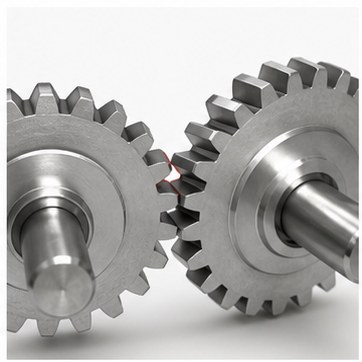
图解：两个齿轮中间留出的空隙，就是方向反转时先“空转”一小段的来源。
Backlash 回差 / 间隙
输入端已经转动，但输出端还没有立刻跟着动的空行程。齿轮间隙、链条松弛、轴孔配合松动都会造成 backlash。
影响：位置控制变差，机械臂、转台、hood 等机构会抖动或定位不准。传动、结构、轴承、加工装配与控制相关机械词汇
下面这些词会频繁出现在 FRC 机械设计、计算器和英文资料中。先把含义对齐，讨论齿比、中心距和可控性时会顺很多。

图解：两个齿轮中间留出的空隙，就是方向反转时先“空转”一小段的来源。
输入端已经转动，但输出端还没有立刻跟着动的空行程。齿轮间隙、链条松弛、轴孔配合松动都会造成 backlash。
影响：位置控制变差，机械臂、转台、hood 等机构会抖动或定位不准。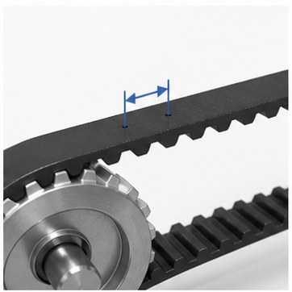
图解：相邻两个齿、孔或链节中心之间的距离，就是 pitch。
链条相邻销轴之间的距离，或同步带相邻齿之间的距离。皮带、链条、链轮、皮带轮必须使用匹配的 pitch。
例子：HTD 5mm 皮带、#25 链条 0.25 inch、#35 链条 0.375 inch。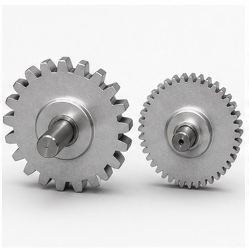
图解：同样直径下齿越多，DP 越大；齿越小，通常承受冲击能力越低。
英制齿轮常用参数，表示每英寸节圆直径上有多少个齿。FRC 常见 20DP、32DP、10DP。
判断：DP 数字越小，齿越大，通常更抗冲击；不同 DP 的齿轮不能啮合。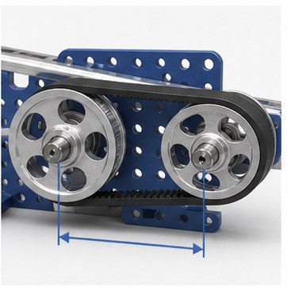
图解：从左轴中心量到右轴中心，这段距离就是中心距。
两个轴中心之间的距离。齿轮、链轮、皮带轮都需要合适中心距才能正常传动。
注意：中心距不是“差不多就行”，它会影响啮合、张紧、磨损和装配难度。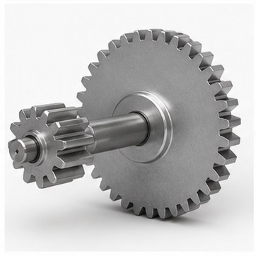
图解：小齿轮带大齿轮时，输出会变慢，但输出扭矩会变大。
输入和输出速度、扭矩的比例。减速会让输出更慢但扭矩更大；增速会让输出更快但扭矩更小。
常用：传动比 = 输出齿数 / 输入齿数。多级传动比相乘得到总传动比。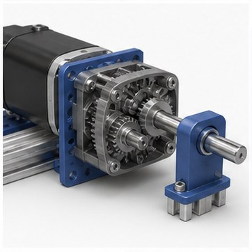
图解：电机高速转动，经过减速后，机构输出更慢但更有力。
通过齿轮、链条、皮带或齿轮箱降低输出转速，同时放大输出扭矩。
FRC 里多数机构都需要 reduction，因为电机空载转速很高，直接驱动通常扭矩不足。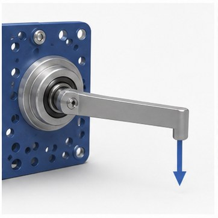
图解：同样的力，作用点离轴越远，产生的旋转力矩越大。
让机构旋转的“转动力”。机械臂、升降、轮子加速、爬升都需要足够扭矩。
直觉：同样的力作用在更长的力臂上，会产生更大的扭矩。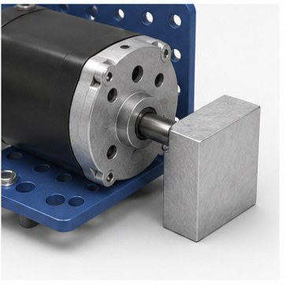
图解：电机想转，但输出端被挡住不动，这就是堵转。
电机被负载卡住无法转动时的状态。堵转电流很大，容易发热、掉压、烧电机或触发保护。
设计目标：不要让机构长时间接近堵转工作，尤其是升降、机械臂和爬升。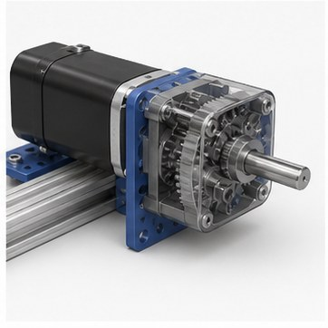
图解：输入的能量经过传动后会损失一部分，输出不会等于 100%。
传动过程中真正传到输出端的功率比例。摩擦、皮带弯折、链条啮合、轴承和齿轮箱都会损失能量。
计算时：输出扭矩通常要乘以效率，不要按 100% 理想情况设计。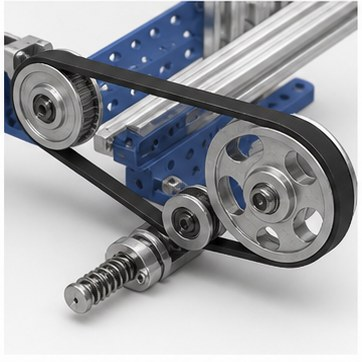
图解：皮带或链条太松会跳齿，太紧会增加摩擦和轴承负担。
链条或皮带需要保持合适松紧。太松会跳齿、甩链或增加 backlash；太紧会增加摩擦和轴承负载。
常见做法：滑槽调节、电机板可调、偏心轴承、张紧轮。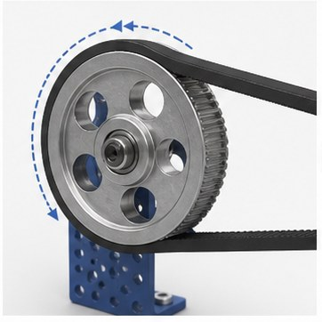
图解：皮带接触轮子的角度越大，参与咬合的齿越多，越不容易打滑。
皮带或链条包住皮带轮/链轮的角度。包角越小，参与传动的齿越少，越容易打滑或跳齿。
设计建议：小皮带轮、高负载机构要特别注意包角和张紧。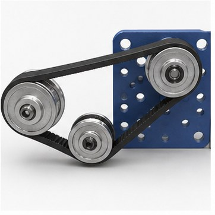
图解：中间的小轮不输出动力，只改变路径、增加包角或帮助张紧。
不直接提供动力，只用来改变皮带/链条路径、增加包角或调整张紧的轮子。
注意：惰轮也会增加摩擦和零件数量，位置要方便维护。